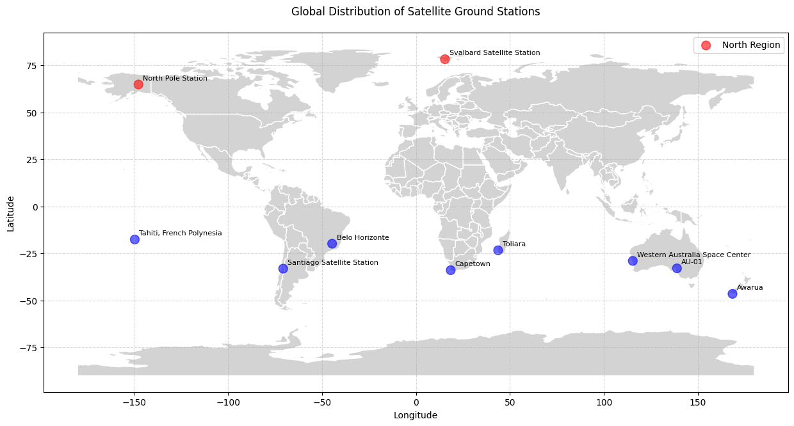
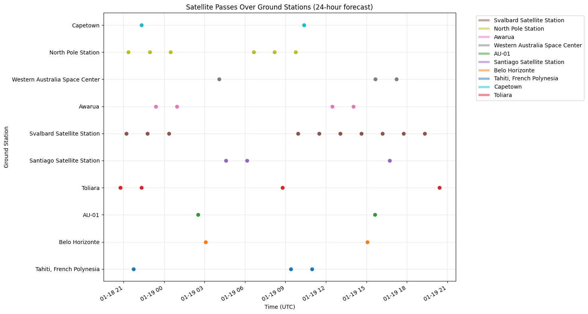

Ground Station Coverage Analysis for Satellites
credit: Photo by Stephan Widua on Unsplash
Code can be found here
Introduction
The visibility of satellites from ground stations is a critical factor in ensuring reliable communication and efficient data throughput for satellite missions. This analysis explores the coverage of a satellite constellation from multiple ground stations distributed across the globe, particularly in the northern and southern polar regions.
The design of the satellite’s orbit plays a significant role in determining the duration and frequency of communication windows with ground stations. By simulating satellite passes using Two-Line Elements (TLEs) and calculating the time each satellite spends over a station, insights into communication durations and global coverage patterns can be generated.
This post will walk through the methodology, results, and implications of analysis, offering insights into how engineers and scientists can optimise ground station networks to ensure reliable communication and data relay for satellite missions.
Methodology
Step 1: Data Preparation
Begin by loading the ground station data from a CSV file, which includes the following information: - Name: The name of the ground station. - Latitude and Longitude: Geographic coordinates of the station. - Region: Indicates whether the station is located in the northern or southern hemisphere.
Here’s a snippet of the dataset:
| Name | Latitude | Longitude | Region | Notes |
|---|---|---|---|---|
| Svalbard Satellite Station | 78.229 | 15.408 | North | Kongsberg Satellite Services |
| North Pole Station | 64.800 | -147.650 | North | Swedish Space Corporation |
| Awarua | -46.530 | 168.380 | South | ATLAS Space Operations |
| Western Australia Space Center | -29.010 | 115.340 | South | Swedish Space Corporation (SSC) |
| AU-01 | -32.960 | 138.850 | South | Leaf Space |
| Santiago Satellite Station | -33.133 | -70.667 | South | Swedish Space Corporation (SSC) |
| Belo Horizonte | -19.861 | -44.619 | South | New |
| Tahiti, French Polynesia | -17.630 | -149.600 | South | ATLAS Space Operations |
| Capetown | -33.951 | 18.459 | South | New |
| Toliara | -23.375 | 43.689 | South | New |
Step 2: Visualising Ground Station Locations
Using matplotlib and geopandas, plot the global distribution of ground stations on a world map. Stations in the northern hemisphere are marked in red, while those in the southern hemisphere are marked in blue. Each station is annotated with its name for clarity.

Summary Statistics:
- North Region:
- Number of stations: 2
- Average latitude: 71.51°
- Minimum latitude: 64.80°
- Maximum latitude: 78.23°
- Number of stations: 2
- South Region:
- Number of stations: 8
- Average latitude: -29.56°
- Minimum latitude: -46.53°
- Maximum latitude: -17.63°
- Number of stations: 8
Step 3: Orbit Parameters and Mean Motion
The satellite used in this analysis is in a Sun-Synchronous Orbit (SSO) with the following parameters:
- Semi-major axis: 6878 km (500 km altitude)
- Eccentricity: 0.01
- Inclination: 97.2°
- Right Ascension of the Ascending Node (RAAN): 90°
- Argument of Perigee: 0°
- True Anomaly: 0°
The mean motion of the satellite is calculated as 15.21982 revolutions per day, which determines how frequently the satellite revisits specific regions.
Step 4: Generating TLEs
To simulate satellite passes, generate a Two-Line Element (TLE) set for the satellite. The TLE format is widely used for orbital prediction and includes essential orbital elements such as inclination, RAAN, eccentricity, and mean motion.
Example TLE:
1 99999U 2520250.000000 .00000000 00000-0 00000-0 0 0000
2 99999 97.2000 0.0000 0010000 0.0000 0.0000 15.21982000 00000Step 5: Visibility Analysis
Using the skyfield library, calculate the visibility of the satellite from each ground station over a 24-hour period. Key metrics include:
- Rise Time: When the satellite rises above the horizon.
- Culmination Time: When the satellite reaches its highest point in the sky.
- Set Time: When the satellite sets below the horizon.
- Duration: Total time the satellite is visible during a pass.
For example, the Svalbard Satellite Station experienced the following passes:
- Pass 1:
- Rise: 2025-01-18T21:08:27Z
- Culmination: 2025-01-18T21:12:10Z
- Set: 2025-01-18T21:15:54Z
- Duration: 7.44 minutes
- Rise: 2025-01-18T21:08:27Z
- Pass 2:
- Rise: 2025-01-18T22:43:02Z
- Culmination: 2025-01-18T22:46:26Z
- Set: 2025-01-18T22:49:51Z
- Duration: 6.81 minutes
- Rise: 2025-01-18T22:43:02Z
Step 6: Visualising Satellite Passes
Visualise the satellite passes over all ground stations using a horizontal timeline plot. Each line represents a ground station, with markers indicating rise, culmination, and set times.

Results
Summary Statistics
The analysis provides detailed statistics for each ground station, including the number of passes, average duration, and minimum/maximum durations. Here are some highlights:
- Svalbard Satellite Station:
- Number of passes: 10
- Average duration: 6.73 minutes
- Minimum duration: 4.98 minutes
- Maximum duration: 7.44 minutes
- Number of passes: 10
- Tahiti, French Polynesia:
- Number of passes: 3
- Average duration: 5.47 minutes
- Minimum duration: 3.91 minutes
- Maximum duration: 7.11 minutes
- Number of passes: 3
Observations
- Ground stations in higher latitudes, such as Svalbard and the North Pole Station, experience more frequent and longer satellite passes due to the near-polar inclination of the orbit.
- Mid-latitude stations, such as Belo Horizonte and Capetown, provide complementary coverage, ensuring continuous communication opportunities.
Conclusion
This analysis demonstrates the importance of strategically placing ground stations to maximise satellite visibility and data throughput. High-latitude stations play a crucial role in providing frequent communication windows, while mid-latitude stations offer additional opportunities for global coverage.
By optimising the ground station network based on these insights, mission operators can ensure reliable communication and efficient data relay, supporting the operational requirements of satellite missions in an increasingly crowded orbital environment.